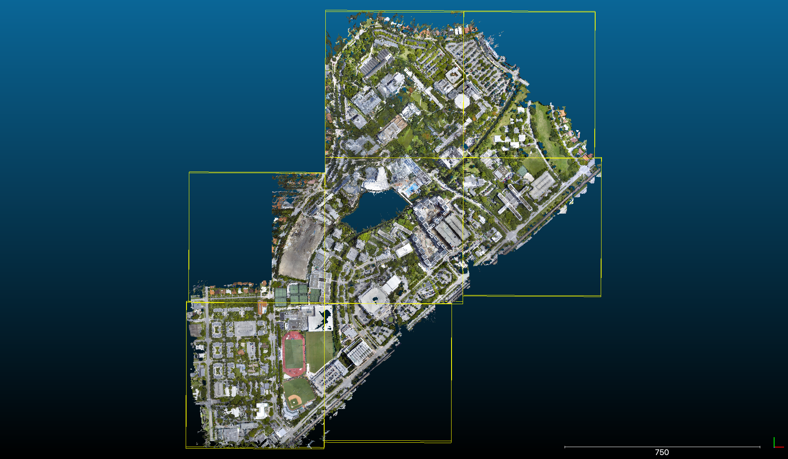
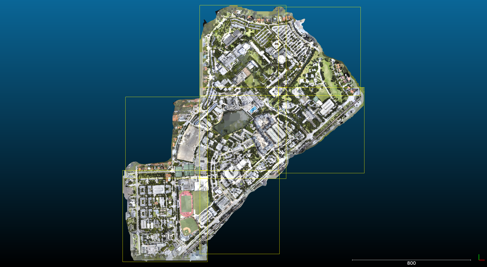
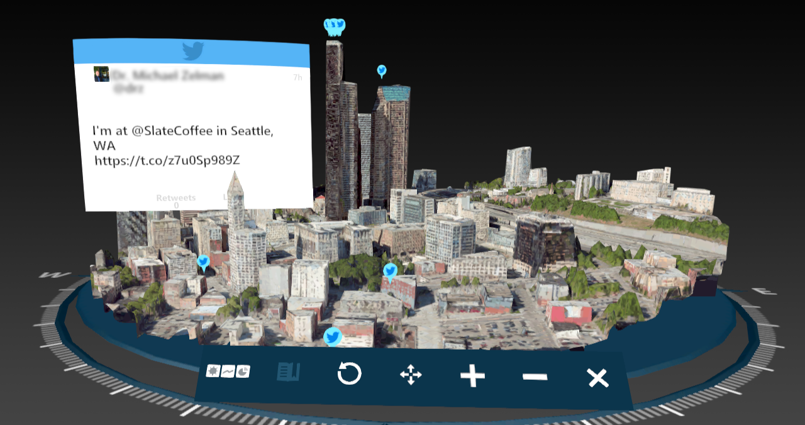
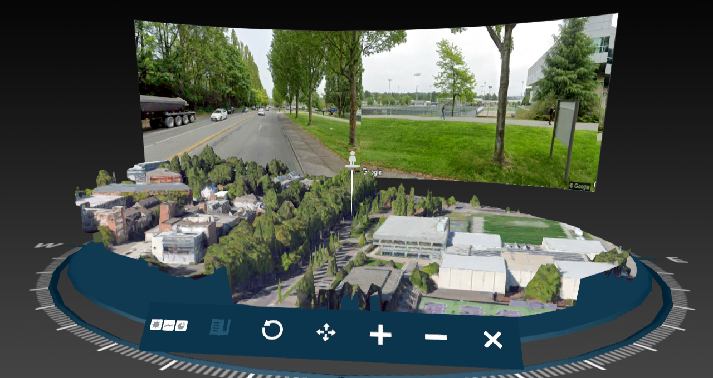

Tiling the MagicVerse
University of Miami - Spring 2020
Timothy B Norris - University of Miami Libraries - Institute for Data Science and Computing - tnorris@miami.edu
Faculty Support
Amin Sarafraz - Department of Civil, Architectural and Environmental Engineering - Institute for Data Science and Computing
Kim Grinfeder - School of Communication
Chris Mader - Institute for Data Science and Computing
Amin Sarafraz - Department of Civil, Architectural and Environmental Engineering - Institute for Data Science and Computing
Kim Grinfeder - School of Communication
Chris Mader - Institute for Data Science and Computing
Student Help
Ty Feng - Department of Computer Science
Steven Moncrief - Department of Computer Science
Ty Feng - Department of Computer Science
Steven Moncrief - Department of Computer Science
the proposal
Tiling the MagicVerse
The prototype that will emerge from the work will be a dynamically scalable version of the 3D campus map created for the first UM Magic Leap application. A user will be able to pick up the map, stretch it, squish it, and place it anywhere in the AR environment. At small scales the user will be able to see a limited view of the model at high resolution. At large scales the user will be able to hold a low resolution version of the entire campus in the palm of their hand. Hand gestures will be used to control the scale of the map and to move it around in the AR environment.
context
Known Difficulties
- Memory limitations on the device
- Internet connection speeds
- Tile creation at appropriate detail and scale
- Gesture driven user interface
- Future of AR in the consumer world
to talk about
Tiling the MagicVerse
- Three components
- Two approaches
- Tile creation
- User experience
- Next steps
basic tasks
Components / Requirements
- Headset
- load only necessary tiles based on current view
- intuitive user interface for pan, zoom, and move
- 3D Tiles
- data structure for automated creation and view-based loading
- levels of detail based on real world error estimates
- Tile Server
- web based storage for tiles
- accessible to headset through https
headset
Approaches
- Game World (unity)
- terrains for landscape
- digital surface models (DSM) and draped imagery
- plenty of experience with game world terrains
- Content Creation (magic-script)
- meshes for landscapes
- surface of triangles and mapped imagery
- some experience with google earth and map box
- Terrains vs. Meshes
two approaches
Terrains in Gameworld (unity)

- Tiles as terrain group
- Digital Surface Model
- Texture Maps
- Cartesian transforms for coordinate system (real world -> game world)
- Problem with head position in game world: fixed to headset position
- Possible with mesh tiles? Existing work?
- Lessen the overhead for simple app?
two approaches
magic-script Content Creation
- Targeted at web content creators, not game developers
- magic-script: ecma script on node
- API docs -> https://docs.magicscript.org
- GitHub -> https://github.com/magic-script
- Examples -> https://github.com/magic-script/magic-script-samples
- Oriented towards building objects not scenes
- glTF format for 3D models - graphics library transmission format
- Many existing libraries in node world (e.g. three.js)
- Still plenty of node overhead
tile creation
glTF
- Khronos Group manages the specification
- Apparently becoming the standard for web based 3D rendering
- Also exists as binary - glb
tile creation
Cesium and 3D tiles
- A mixed proprietary and open source set of tools for 3D tiling systems
- https://github.com/CesiumGS/3d-tiles
- Their 3D tile specification
- Many other 3D tools -> https://github.com/CesiumGS
- All built around glTF
- Free online tile creation service (tiles are hosted): https://cesium.com
- Quick example - UMTiled.html
- Potential collaboration ... or competition?
- Alternatives ... perhaps MapBox or Google?
tile creation
Point Cloud from Drone Flight

tile creation
3D Mesh Tiles

tile creation
Tileset Implementation
- Cesium 3D tile schema
- Root node with child nodes
- Each node has:
- geometricError (meters)
- transform
- boundingVolume
- content
user experience
Map Interaction: The To Do List *
- Pan
- Zoom
- determine view volume in headset
- geometricError and boundingVolume to choose tiles
- load tiles from server
- memory management on device
- Rotate
- Move entire map
- * largely due to device problems and difficulties of distance debugging
next steps
*New* Known Problems
- Jitter and magic-script
- Rotation transforms too 'heavy'
- Connection speeds on device for tile loading
- Magic Leap no longer targeting consumer market
next steps
TODO
- Benchmark different transforms in headset
- Benchmark tile data densities in headset
- Finish user interface
- likely with controller, not hand gestures
- complete 'tiling' functionality
- include interactivity with map features
- Multiple layer functionality
- Separate features from topography in tiles
the team
Thanks and Acknowledgments
- Drone flight and original photogrammetry
Chris Mader - Institute for Data Science and Computing
Amin Sarafraz - Department of Civil, Architectural and Environmental Engineering - Institute for Data Science and Computing - Point cloud crunching, 3D tile creation and tileset creation
Ty Feng - Department of Computer Science - Headset programming and user interface
Timothy B Norris - University of Miami Libraries - Institute for Data Science and Computing
Steven Moncrief - Department of Computer Science - User interface director
Kim Grinfeder - School of Communication
the funder
Thanks and Acknowledgments
The University of Miami Office of the Provost
and
Jean-Pierre Bardet, PhD
Vice Provost for Strategic Projects
and
Jean-Pierre Bardet, PhD
Vice Provost for Strategic Projects
beat us to the punch
HoloMaps
|  |  |